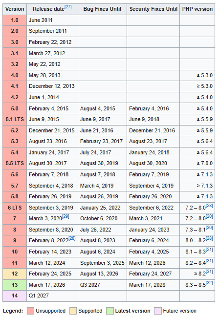

Ларавел гэж юу вэ, яагаад үүнийг ашигладаг вэ?
Дэлхий дээр хамгийн түгээмэл вэб програмчлалын хэл болох PHP дээр суурилсан олон framework
байдгийн
хамгийн түгээмэл суралцахад хялбар, бүх төрлийн вэб аппликэйшн хийхэд тохиромжтой бөгөөд
хурдтай нь
Laravel Framework юм.

Laravel түүх
Laravel vs PHP vs Java — Харьцуулалт
| Шинж чанар |
PHP |
Laravel |
Java |
| Төрөл |
Програмчлалын хэл |
PHP framework |
Програмчлалын хэл |
| Зорилго |
Веб backend |
Хурдан веб апп хөгжүүлэлт |
Enterprise, олон төрлийн систем |
| Сурахад |
Амар |
Дунд |
Хэцүү |
| Хурд (dev) |
Дунд |
Маш хурдан |
Удаан |
| Performance |
Дунд |
Дунд |
Өндөр |
| Structure |
Чөлөөтэй |
MVC |
OOP, хатуу |
| Ашиглалт |
Жижиг сайт |
CRUD, веб апп |
Bank, том систем |
| Security |
Гараар |
Built-in хамгаалалт |
Өндөр |
| Дүгнэлт |
Суурь хэл |
Веб хөгжүүлэлтэд хамгийн тохиромжтой |
Том системд хамгийн хүчтэй |
Laravel дээр database хэрхэн холбох вэ?
- Laravel-д .env файл дотор DB_DATABASE, DB_USERNAME, DB_PASSWORD тохируулснаар database
холбогдоно.
Дараа нь php artisan migrate ашиглан хүснэгтүүд үүсгэнэ.
Laravel дээр routing гэж юу вэ?
- Routing нь URL хүсэлтийг (request) тодорхой controller эсвэл function руу чиглүүлэх
процесс юм. Энэ
нь routes/web.php файл дээр бичигддэг.
Laravel дээр controller ямар үүрэгтэй вэ?
- Controller нь логик үйлдлийг удирдаж, model болон view-г холбодог. Өөрөөр хэлбэл
хэрэглэгчийн
request-ийг боловсруулж, үр дүнг буцаана.
|
|